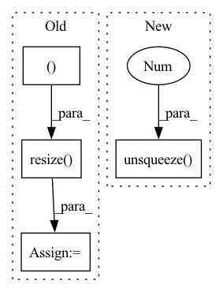

Pattern ID :1470
Before Change
if self.backend == "pil":
image = Image.open(self.image_paths[item])
if self.resize is not None:
image = image.resize(
(self.resize[1], self.resize[0] ), resample=Image.BILINEAR
)
image = np.array(image)
if self.augmentations is not None:
augmented = self.augmentations(image=image)
image = augmented["image"]After Change
image_tensor = torch.tensor(image)
if self.grayscale:
image_tensor = image_tensor.unsqueeze(0 )
return {
"image": image_tensor,
"targets": torch.tensor(targets),
}In pattern: SUPERPATTERN
Frequency: 3
Non-data size: 4
Instances Fragment ID: 6776204
Project Name: abhi1thakur/tez
Commit Name: dda5ac9c1e1ea0e43e08f5f490b86ea8eb413efd
Time: 2020-12-26
Author: abhishek4@gmail.com
File Name: tez/datasets/image_classification.py
M Class Name: ImageDataset
N Class Name: ImageDataset
M Method Name: __getitem__(2)
N Method Name: __getitem__(2)
M Parent Class:
N Parent Class:
M File Name: tez/datasets/image_classification.py
N File Name: tez/datasets/image_classification.py
M Start Line: 41
M End Line: 67
N Start Line: 46
N End Line: 63
Before Change
scale = min(scale1, scale2)
// resize到最小比例,anti_aliasing为是否采用高斯滤波 使用sk-learn的方式来resize
out_h, out_w = in_h * scale, in_w * scale
img = sktsf.resize( img, (in_c, out_h, out_w ), mode="reflect", anti_aliasing=False) // np.float64
img = self.normalize(torch.from_numpy(img)).numpy()
// img = F.interpolate(img.unsqueeze(0), size=(round(out_h), round(out_w)), mode="nearest").squeeze(0)
// img = F.interpolate(img.unsqueeze(0), size=(round(out_h), round(out_w)), mode="bilinear",align_corners=True).squeeze(0)After Change
scale2 = self.max_size / max(in_h, in_w)
scale = min(scale1, scale2)
out_h, out_w = round(in_h * scale), round(in_w * scale)
img = F.interpolate(img.unsqueeze(0 ) , size=(out_h, out_w), mode="bilinear",align_corners=True).squeeze(0)
img = self.normalize(img).numpy()
if self.is_train:
box *= scale Fragment ID: 6776203
Project Name: pangkun248/faster-rcnn-pytorch
Commit Name: 9f846e1554bc021a8736389744969d0dd7f97321
Time: 2021-08-30
Author: 39581901+pangkun248@users.noreply.github.com
File Name: dataset.py
M Class Name: ListDataset
N Class Name: ListDataset
M Method Name: __getitem__(2)
N Method Name: __getitem__(2)
M Parent Class: Dataset
N Parent Class: Dataset
M File Name: dataset.py
N File Name: dataset.py
M Start Line: 47
M End Line: 67
N Start Line: 43
N End Line: 59
Before Change
scale2 = 1000 / max(in_h, in_w)
scale = min(scale1, scale2)
out_h, out_w = in_h * scale, in_w * scale
img = sktsf.resize( img, (in_c, out_h, out_w ), mode="reflect", anti_aliasing=False) // np.float64
img = self.normalize(torch.from_numpy(img)).numpy()
// img = F.interpolate(img.unsqueeze(0), size=(round(in_h * scale), round(in_w * scale)), mode="nearest").squeeze(0)
// img = tvtsf.Normalize(mean=[0.485, 0.456, 0.406], std=[0.229, 0.224, 0.225])(img)
return img_path, img, img.shape[1:]After Change
scale1 = 600 / min(in_h, in_w)
scale2 = 1000 / max(in_h, in_w)
scale = min(scale1, scale2)
img = F.interpolate(img.unsqueeze(0 ) , size=(round(in_h * scale), round(in_w * scale)), mode="nearest").squeeze(0)
img = tvtsf.Normalize(mean=[0.485, 0.456, 0.406], std=[0.229, 0.224, 0.225])(img)
return img_path, img, img.shape[1:]
Fragment ID: 6776201
Project Name: pangkun248/faster-rcnn-pytorch
Commit Name: 9f846e1554bc021a8736389744969d0dd7f97321
Time: 2021-08-30
Author: 39581901+pangkun248@users.noreply.github.com
File Name: dataset.py
M Class Name: ImageFolder
N Class Name: ImageFolder
M Method Name: __getitem__(2)
N Method Name: __getitem__(2)
M Parent Class: Dataset
N Parent Class: Dataset
M File Name: dataset.py
N File Name: dataset.py
M Start Line: 110
M End Line: 119
N Start Line: 91
N End Line: 99